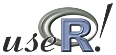

Karline Soetaert and Olivier Beauchard
Netherlands Institute for Sea Research

Introduction
Bfiat (Bottom Fisheries Impact Assessment Tool) is an R-package that
estimates the impact of bottom trawling on sediment inhabiting organisms,
and on sediment ecosystem functions.
It contains data-driven mechanistic models that describe how species
density is being reduced by bottom trawling, and then recovers till
the next fishing event.
The R-package Bfiat is created in the framework of the EMODnet biology project, the NECCTON (New Copernicus Capability for Trophic Ocean Networks) project, and in cooperation with the ICES Working Group on Fisheries Benthic Impact and Trade-offs (WGFBIT).



Installation
Before installing the Bfiat package, you need to first install the following R-packages and their dependencies:
- Btrait, to work with species data, and for the trait databases (to be found on github/EMODNET/btrait).
- deSolve, to solve the mechanistic model
- devtools, required for a seamless installation of the Bfiat and Btrait packages from this github repository.
Once the deSolve and devtools packages have been installed (from CRAN), type the following command in the R-console to install the Btrait and Bfiat package:
devtools::install_github("EMODnet/Btrait", depend=TRUE, build_vignettes=TRUE)
devtools::install_github("EMODnet/Bfiat", depend=TRUE, build_vignettes=TRUE)If you do not want to install the vignettes, then you may delete the build_vignettes = TRUE part.
Then, type require(Bfiat) in the R-console to load the package in R.
That’s it! After this step, you should be able to use the package.
Getting help
As for any other R-package, you can get extra help by entering ?Bfiat in the R console.
There is a vignette in the package, that can be triggered with vignette("Btrait") in the R console.
Uninstall
To uninstall the Bfiat package, locate it in the “Packages” tab in Rstudio, and click on the encircled “x” button (“Remove package”) on the right margin.
To uninstall the package manually, type the following command in the R-console (the version of the library may differ, here we assume 4.1):
-
Windows users:
remove.packages("Bfiat", lib="~/R/win-library/4.1") -
Linux users:
remove.packages("Bfiat", lib="~/R/x86_64-pc-linux-gnu-library/4.1")
During the transition from version 0.01 to version 1.0.0 the names of many functions have changed. Also, the function names in package Btrait, used by Bfiat, have changed. This means that any code that uses these old versions will need to be adapted.
First upload: 22/02/2024
Last major change: 29/01/2025